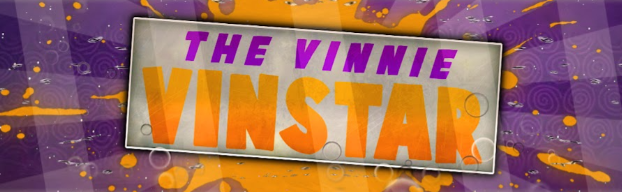

I am a hard-working, motivated and reliable individual with excellent timekeeping skills. Prone to learn new skills, I am always challenging myself to do better and complete every task above standards.
I am self-taught in Web and Software Development, learning from repeatable companies such as Codecademy and ITCareerSwitch courses. From these courses I have learnt the fundamental of creating a website and software using coding languages such as PHP, Python, JavaScript and many more. I am also self-taught in a multitude of visual effects and animation programs.
When I was in secondary school, I had the desire to be a YouTuber, this leading me to make content on gaming.

As much as I enjoyed creating gaming videos, I wanted to improve on visual effects thus, I started learning how to animate using Cinema 4D and Adobe After Effects for the visual effects.
Eventually, I started a new channel to advertise my work. I started gaining clients and a following with one channel at almost 1000 subscribers on a YouTube channel and over 500 subscribers on another that I used to showcase to a college.
Animation I created for clients, contest and college projects.
After finishing school, I wanted to proceed further with animation, so I enrolled on a Motion Graphics and Animation Course.
I finished the 2 years with an UAL Level 3 Extended Diploma in Creative Media Production and Technology.
College - Final Major Project
Holographic Arm
Having an interest in developing websites and coding but never trying it I finally threw myself into a course to learn the fundamental of full-stack development. This taught me commonly used languages used to create websites, programs and servers.
After doing the course it helped me decide this is what I want as a career.
A couple of website designs created using Figma.